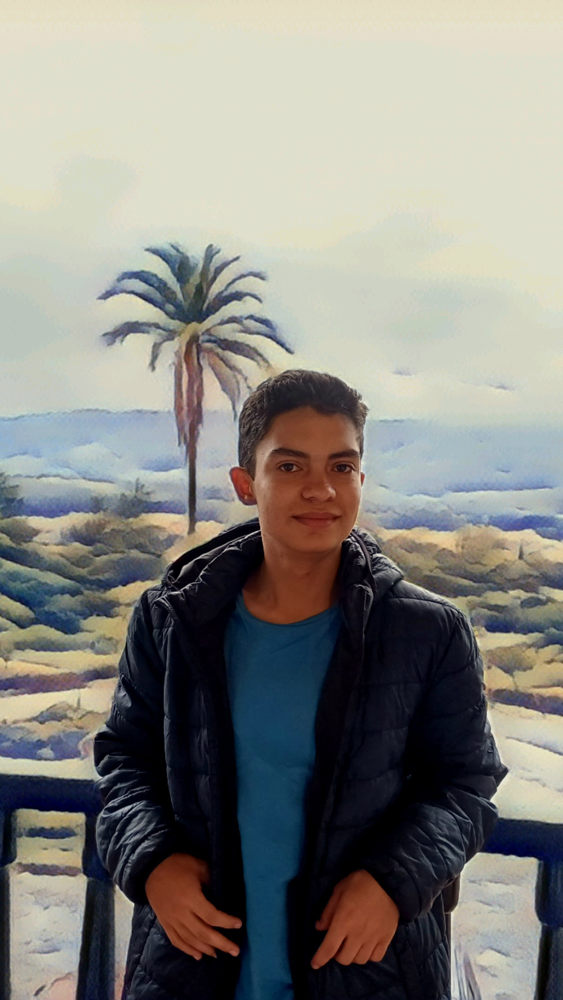

Soy Jesús Antonio Murcia Guzmán
yisusmurci@gmail.com
mail
content_copy
Mis proyectos
Sobre mí

Hablidades blandas
Resolución de problemas
Comunicación
Gestión de conflictos
Organización bajo presión